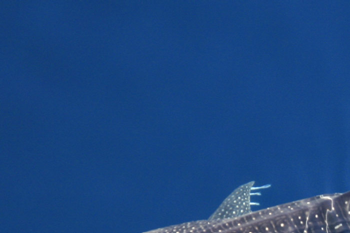
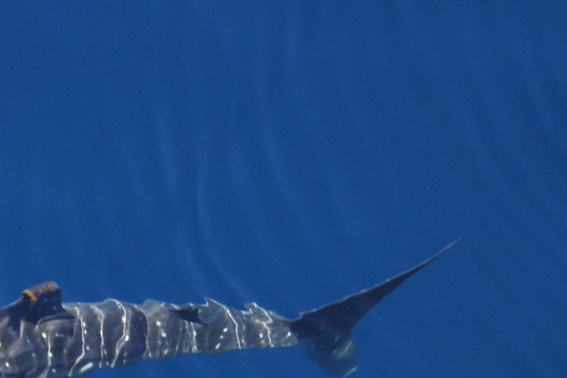
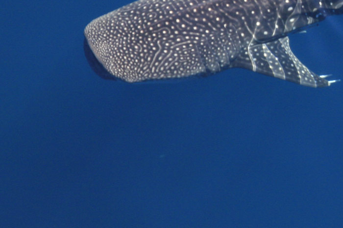

Sponsors


From 28-31 May 2019, the town of Exmouth in the Ningaloo Coast World Heritage Area will welcome delegates to the 5th International Whale Shark Conference (IWSC5), a meeting of the world's leading whale shark scientists, conservationists, natural resource managers and tourism managers. This is the fifth such conference to be held, following on from the successful IWSC4 held in Doha, Qatar in 2016. This is also the first international conference of this type to be held in Exmouth and at the new Ningaloo Centre. This conference is timed to showcase Ningaloo's world's best practice whale shark management program and will follow the Ningaloo Whaleshark Festival, an annual community event that celebrates these magnificent animals.
Whale sharks, the world's largest fish, are listed as Endangered on the International Union for the Conservation of Nature (IUCN) Red List, yet very little is known of whale shark biology and ecology. IWSC5 will bring together local scientists, researchers and postgraduate students to interact with international colleagues and collaborators to explore all aspects of whale shark biology and ecology and how this can translate to direct, on-ground conservation efforts. Delegates from around the world will be treated to four days of presentations, workshops, social functions and a day on the water to experience the world renowned Ningaloo whale shark tourism industry to forge new relationships and collaborations and debate ideas.
A core focus of IWSC5 will be bringing together end users of the science being presented, such as tourism managers, marine park managers and conservation groups. This will improve the uptake and application of research and help develop collaborations between research scientists and managers and industry.
Organising Committee: Arvid Hogstrom (chair), Dani Rob, Michele Thums, Sharon Hann, Michael Husband, Jacinta Overman, Jaci Cutler.
Scientific Committee: Mark Meekan (Australia, chair), Richard Pillans (Australia), Brad Norman (Australia), Jennifer Schmidt (USA), Simon Pierce (Mozambique), David Rowat (Seychelles), Deni Ramirez-Macias (Mexico), Kelly Waples (Australia), Peter Barnes (Australia).
Professor David Sims is a Senior Research Fellow at the Marine Biological Association (MBA) Laboratory in Plymouth, UK, and is Professor of Marine Ecology at the University of Southampton's National Oceanography Centre Southampton (NOCS).
Dr. Neil Hammerschlag is a marine ecologist and Research Associate Professor at the University of Miami Rosenstiel School of Marine & Atmospheric Science and Abess Center for Ecosystem Science & Policy.
The conference will be held at the Ningaloo Centre, located on Murat Rd in Exmouth.
Fri 24 - Sun 26 May The annual Ningaloo Whale Shark Festival. This is not part of the official program for IWSC5, however delegates may choose to arrive earlier and join in the celebrations. See www.ningaloowhalesharkfestival.org.au for further information. Events include live music & corporate displays.
- Information to come -
The 5th International Whale Shark Conference 2019 (IWSC5) will offer a limited number of travel subsidies to delegates from developing countries and for overseas students.
Download the Subsidy Scheme information sheet.
How to get to Ningaloo, information and recommendations for transport alternatives.
Official conference hotel and how to book.
Learn more about the Ningaloo region.
Visas, weather, dress code, currency, power adapters, security, emus!
NINGALOO WEATHER
Parks and Wildlife Service at the Department of Biodiversity, Conservation and Attractions is responsible for the management of whale sharks in Western Australian waters. The overarching vision for the management program is a healthy and natural whale shark population is maintained and supported by the management of a world-class and sustainable tourism industry which raises appreciation and understanding of whale sharks.
Day 2 of the official IWSC5 program is a Day On The Water! Included in your registration, all delegates will have the chance to join one of Ningaloo's whale shark tours for the day, to experience the industry first hand. All snorkelling gear is provided, more information will be available closer to the day so check back here later.
Visit the Parks and Wildlife Service's website to learn more about the management of whale sharks. View the management plan.
